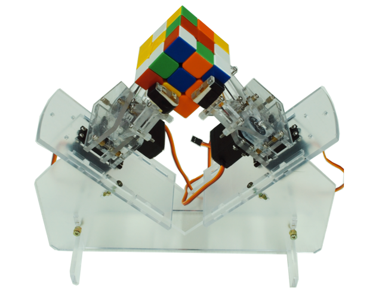

Introduction
RonbergyPi Solver: A Robotic Rubiks Cube Solver
For this project, we chose to build a robotic rubik’s cube solver using a Raspberry Pi. Our goal was to build a robot that could scan a rubik’s cube, compute the algorithmic solution, and execute the algorithm moves to solve the cube. We designed a fully custom mechanical chassis, consisted of both laser cut acrylic and 3D printed parts. We used a Raspberry PI for all processing and control, a Pi camera to scan the faces of the Rubik’s cube, 4 stepper motors for rotation of each face, and 4 solenoids for engagement of the claws on each face. Unfortunately, our final project was not able to fully solve a cube due to mechanical slop, but in the Future Work section we reference improvements to solve the issues we faced. All of our code and mechanical assemblies worked very well independently, but the arm motions were not consistent enough to implement a full set of moves to solve the cube. With just a few changes, our project can be a fully functioning, sexy, and fast Rubik’s cube solver. All code and CAD files are available in the git repository linked in the Appendix section.
Close
High Level Design
There are many approaches that can be taken when building a rubik’s cube solving robot. A robotics solver can be made with anywhere from 2 to 6 mechanical arm assemblies. With only two arms, each move takes multiple steps because not all faces can be rotated at any given time, instead the cube must be reoriented before performing the move on the appropriate face. With 6 assemblies, every move takes exactly one step, meaning a 20 move solution algorithm only takes 20 steps to execute.

We chose 4 arm assemblies because it was the most we could use without going over budget. Every arm assembly requires two degrees of freedom, one for rotation of the face and one for engagement of the face (grabbing and releasing). The second major mechanical design decision to be made is whether the engagement occurs using opening and closing grippers or a fixed size claw that slides onto and off of the cube face. We decided to use a fixed claw because we wanted to reduce mechanical complexity and increase the speed of the solver because moving in and out could take less time then opening and closing a gripper. For the rotation degree of freedom, we chose stepper motors.because they are very accurate and can be controlled precisely using steps instead of running a motor at a certain velocity for a certain amount of time. We chose gear the stepper output to increase the final speed of the claw for faster move time. For the engagement/disengagement degree of freedom, we chose to using solenoids with a 1cm stroke. Solenoids are very easy to control, powerful, and extremely quick. The four solenoids are controlled using a 4-channel relay and the stepper motors are controlled using Pololu stepper drivers.
Regarding software, it is possible to compute a solution algorithm given the initial state of a cube, meaning with one accurate scan of every cube face, it is possible to compute the solution algorithm and solve the cube without any further scans. In order to scan the six cube faces we placed fixed camera beneath the cube to take images of each face while the arms rotate each face of the cube down towards the camera. We decided given the fixed camera frame and consistent face position relative to the camera no matter what orientation, we could implement a very simple color detection scheme by reading pixel values of each square on a given face. This means we do not need fancy computer vision packages or functions to detect and analyze the face. The main vulnerability of this simple method is different lighting conditions can affect the hardcoded pixel value ranges and thresholds. The algorithm we chose to implement is called the Two-Phase Algorithm developed by Henry Kociemba. This algorithm is capable of solving any 3x3 cube configuration in 20 moves or less. It is one of the faster algorithms that exists today, and has plenty of documentation and even code implementations. We used a pre existing python implementation of this algorithm called kociemba. The python implementation of the algorithm takes in as an input a 54 letter string that encodes the cube’s initial state. The 54 letter string is derived from the 9 squares on each of the cube’s 6 faces. The output of kociemba is a string of moves that is the solution algorithm. We structured our code to accommodate the algorithm string output by creating functions for each move that execute the correct stepper motor and solenoid movements according to the desired move. Once these functions are tuned, executing the solution algorithm is a simple as calling the functions for each move in the solution algorithm.
Close
Hardware
Hardware for this project includes a custom 3D printed parts, a laser cut acrylic chassis, and off-the-shelf actuators and electronic components. Our hardware design was inspired by exising rubik's solving robots, but we chose an entirely custom chassis to optimize integration and packaging of our four mechanical arm assemblies. Below we listed our rationale for each component, and component details, can be found below. In our case we used sourced using Ebay and Amazon.
Mechanical Design
Mechanical Arm Assembly
The arm assembly was designed to be fast and tightly packaged. The design requirements for the arm assembly were that it must be able to rotate the claw using a stepper motor and grab or release the cube face using a solenoid. To achieve both these degrees of freedom, we chose a sliding spur gear transmission. This allows for the main shaft and claw to slide forward and backward with the help of the solenoid to engage or disengage the cube face, while still transferring rotation through the stepper motor’s main gear. In order to increase the speed of rotation, we used a transmission with a ~2.5:1 gear ratio. Because the stepper motor was below the main shaft, as opposed to in line, the solenoid could be place in line with the main shaft. We chose to 3D print the fixed size claws out of PLA plastic and glue the claws onto our steel shafts. The shafts were constrained by the bearings using 3D printed bearing blocks. The spur gears themselves were 3D printed with a 1.5m tooth module. The main gear was printed with a D-bore to fit the stepper motor shaft, while the small gear was glued to the steel shaft using CA glue. Stepper motor mounts were also designed and printed to constrain the motors to the the underside of the top chassis plate. Small risers were also printed to axially align the solenoids with the main shafts. All parts were fastened to top plate of the chassis using M3 hardware and CA glue:
Chassis
The chassis was designed to emanate simple, clean, elegant beauty. A mix of angular, and curvaceous edges and perimeters were used. The chassis was designed completely symmetrically around the central axis. The top chassis plate had all necessary mounting holes for the mechanical arm assemblies, while the bottom chassis plate was main used to mount the Pi camera and all other electronics, including the 4 channel relay, the Raspberry Pi, and 2 breadboards. The legs were designed to separate the two plates, and lift the entire chassis off the ground. Finally, the top plate was designed to be easily removed by lifting it vertically since the legs simply fit into slot through the top plate. The entire chassis was made using 12” x 12” x 02” white acrylic sheets. The chassis was assembled using CA glue.
Actuators and Electrical Components
Stepper Motors
Nema 17
These stepper motors are small and powerful, measuring only 42mm in square base and outputting 26 Ncm of holding torque. These steppers have 1.8 degree steps, making a full rotation in 200 steps. These 4-wire bipolar stepper motors run off of 12 or 24V and pull a maximum of 1.6A. These steppers are commonly used in CNC and 3D Printer applications.
Stepper Motor Drivers
Pololu DRV8825
We chose these stepper drivers because they have six micro-step resolutions, down to 1/32 of a step, meaning we can control the bipolar stepper motors with extreme precision. These drivers have adjustable current limiting, and can take in 8-45V. We used an external 12V 55A server power supply to power our stepper motors through the driver.
We used the above wiring diagram to wire our Nema 17 stepper motors to the driver. We chose to run our stepers using the 1/4 microstep mode in order to have smooth rotation while not compromising torque, which decreases with smaller micrsteps.To enable 1/4 microstep mode both the M0 and M2 pins were pulled high using 1KΩ resistors.
Solenoids
10mm Stroke 12V 2A Soleniod
Solenoids operate by generating a magnetic field to force a rod forward or backward. When the solenoid is powered, the electromagnet turns on and the piston is pushed forward. When the soleniod is unpowered, a spring causes the piston to return to its original position. We chose these solenoids because they are 12V, meaning they can be powered off the same power supply as the stepper motors. They have a 10mm stroke, enough range for the claw to overlap with the cube face but also completely disengage. The solenoids were constrained to the back of the steel shafts by epoxying the ballnut to the back of the shaft.
Relay
Sainsmart 4-Channel Relay | 30V 10A
This 4 Channel Relay is used to power and control the 4 solenoids. Each solenoid pulls 2A and each relay channel is rated for a maximum of 10A. The relay must be wired to an external power supply, which in our case was a 12V 55A server power supply. Each channel is controlled using a GPIO pin; high is enabled, while low is disabled.
Steel Shafts
8mm x 100mm Hardened Steel Shafts
These shafts are are used to translate the rotation from the spur gear to the claw and the translational force of the solenoids.
Bearings
608zz Ball Bearings (skateboard bearings)
These bearings are used to ensure low friction, smooth motion of the shafts for both its rotational and translational movements. In other words the bearings allow the shafts to spin and slide. The bearings are used to constrain the shaft directly inline with the cube face.
Close
Software
The software for this project is split up into a couple categories: sensor reading, the dynamics/control algorithm, and motor driving. It can be found here. The main file that our code runs from is called stewie_main.c. Additionally, we used the protothreads, tft display, and I2C helper libraries.
Rubik's Cube Scanning
There are typically two formats that people use to represent the states of a rubik cube. The String Representation looks like the following, and typically serves as the input to solving algorithms.
The Matrix Representation looks like the following, and for us, it serves as an intermediate form for programming purposes.

In the String Representation, the characters represent the faces, such as U -> Up, R -> Right, F -> Front, D -> Down, L -> Left, and B -> Back. In the Matrix Representation, the characters represent the color, such as B -> Blue, W -> White, R -> Red, O -> Orange, G -> Green, and Y -> Yellow.
We thus defined our rubik cube scanning procedure to be the following.
Step 1: The Rubik Cube to Matrix Representation
Essentially for this step, we took 6 pictures of 6 different facets at the very beginning, identify the 9 tiles of each facet, read their RGB or HSV values, and compare with our pre-calibrated ranges for each of the 6 colors. It was a rather straightforward and effective process, as we did not employ any sophisticated CV libraries such as OpenCV. However, there were a few key observations that we made and they made our scanning processes much simpler and effective.
Only scan at the beginning
The rubik cube solver does not have to continuously scan throughout the solving process. It only needs to scan the six facets at the beginning for once, as all of the later states can be derived from its first states and the rotations.
Read the RGB values from fixed positions
As the rubik cube would stay at a fixed position relative to the camera, so after some initial calibration, the scanning program can read from the same nine positions from the pictures taken to read the colors of each facet.
Use HSV representation instead of RGB
RGB representations perform poorly in response to different lighting and environment settings. Instead we translated RGB to HSV first and read the H (hue) value to recognize the color. Based on our experiments, the H value would stay rather constant under different settings for the same cube and color. However, sometimes the H value would be bad at representing colors that are “similar”. The H value was very effective in differentiating between blue, green, red, or white - that their H value readings would be drastically different, but it was bad in differentiating between white and yellow, or red and orange. In that case, we resorted to the S (saturation), and V (lightness) readings. The following is our code for this implementation.

Step 2: Matrix Representation to String Representation
The string representation is one that doesn’t speak about the actual colors of each tile, instead, the relative locations. For example, after the first step we recognized a tile of a face to be blue, but instead of putting it as a “B” for blue, we know that, let’s say, the front facet will be entirely blue after solving it, so we will represent this tile using “F”, for front. In English, it says that “this tile has the color that the front facet has”. How do we know what color each facet will have at the end then? This question brings us to the next key observation that we made.
The center tile of a facet will always stay there: If you know a little bit about the structures of the rubiks, there are typically the side tiles, the corner tiles, and the center tiles. What’s special about the center tiles is that it will always stay with that face no matter how much you mess up the rubik, so by reading the color of the center tile, we know the color of that entire facet.
The next thing is to construct the output string. We had our own scanning sequence and there are certain conventions that need to be followed when constructing the String Representation. As in the next diagram, we had our own scanning sequence that’s optimized towards mechanical simplicity, and it does not necessarily align with the sequence of the output string. Our String Representation is designed to be fed into Henry Kociemba’s two-phase algorithm implemented in this github repo,, which used this representation as the input, so out of convenience, we followed the same design.
Solving Algorithm and User Interface
We used Henry Kociemba’s two-phase algorithm to solve the cube. The github repository by muodov already implements this algorithm so we just took advantage of that. This site is not meant to explain the solving algorithm, as there are better sites to read for this purpose. We recommend reading the links listed in the References section of the Appendix to understand Kociemba’s two-phase algorithm.
Calling for a solution is as easy as the following one-liner, where each state is a 54 characters long String Representation of the cube state, and typically the solved state is “UUUUUUUUURRRRRRRRRRFFFFFFFFFDDDDDDDDDLLLLLLLLLBBBBBBBBB”, representing a solved rubik cube. In addition, what’s nice about this implementation is that the second argument can be any valid rubik cube’s state, and the algorithm would still be able to provide a solution that solves the rubik to that arbitrary state. This feature proved to be very convenient as we were building our UI system to demonstrate the cube step by step.

We mostly referred to this github repo to build our UI system. This repo not only created a framework to represent a rubik cube object, but also provided a solving algorithm. However we mostly focused on the prior, as we already had our Kociemba algorithm. As this post suggested, we can pass in a solution using Kociemba’s algorithm to the cube object, to manipulate the cube to the current state from the original clean state.

The author of PyCuber repo claimed that the above is going to print the cube in six colors in the terminal, but according to our testing it was only able to print the characters that represent those colors, such as “y”, “r”, or “b”. Our contribution is that we created a helper function called “printRubik” that will actually print the rubik cube object in colors in the terminal. It’s listed here in our github repo.
Implementing Moves
As demonstrated in the following code snippet, we parsed each move of the solution into a queue, and wrote a while loop that executes each move one by one, until the queue is empty. It’s important to setup a delay between each moves, because the function calls don’t “wait” for the mechanical motions to be finished, all of the instructions to the motors would be sent at once, or at the speed that this while loop gets executed, which is sub-milliseconds, and obviously in that case the rubik cube would be messed up.

Our executeOneMove function will be able to decode the moves, such as “R”, “L”, “U’”, and etc. into instructions for the motor. If you want build a rubik solver on your own, you might want to do something specific to your mechanical designs here, but the idea here is to have multiple layers of abstraction to make things simpler. As an example, to interpret “R”, we called a few helper functions that are specific to the claws.
Close
Results and Testing
Testing
The goal of our testing was focused on making sure each individual parts works before putting them together.
The first testing that we did was to make sure that reading and writing jpeg images works, because our PiCam would store the picture taken in the file system, and the program will be reading out those pictures as numpy arrays. We wrote ImageIOTest.py for this purpose. We were able to verify that the image is a 3-D numpy array, and the z axis are the R, G, and B layers.
The second testing was to test that PiCam works. We wrote CameraTest.py to live stream for 60 seconds, then take a picture and store it in the file system. One thing to note here is that there are a few different modes of PiCam. In certain modes PiCam will not capture the full Field Of View (FoV) instead cut of a decent portion. This becomes particularly important if you want to shorten the distance between PiCam and the rubik cube to make the mechanical design concise. There might be settings to specifically alter the modes, but what we did was to set the resolution of the camera to 640*480 to force to mode #7 which does capture full FoV.
The third testing was to test our stepper motors work. We wrote SteppersTest.py for this purpose. We altered between different configurations to look for the best motor setting for our design. SPR (Steps Per Revolution) defines how many steps each 360 degree revolution has. The more steps it has the smoother and slower the motion is. The delay defines how long it pauses between each other steps, so the longer the delay is the slower the stepper turns. SPR may also has to deal with the torque delivered, it’s part of our future work to take the torque into consideration to further find the best settings for the stepper motors.
The forth testing was to test that our claws work correctly. We wrote ClawsTest.py for this purpose. It essentially calls the functions that runs our claws in MechanicalAPI.py, and we made sure that the claws motions were indeed in accordance to the purpose of those functions. We had some problems with the solenoids not fully retracting the claws, and the stepper motors error accumulating over time. The project would have been more successful if we were well aware with these issues beforehand and able to address them more effectively. In fact we are not yet able to resolve these and it’s part of our future works.
Results
Overall, the individual components were mostly successful, as we were able to work out the scanning, the algorithm, and the motors. However, we weren’t quite able to achieve our original goal letting it solve a rubik, but given that the individual components were working, we can totally see it happening if we spend more time into perfecting our camera and motors.
We were able to run through the entire scanning procedure, which involved the stepper motors, the solenoids, and the camera. The problem was that the recognization was not very accurate and was not able to read the color of a few tiles.
We were also able to run a few simple algorithms on our rubik cube.
Here is a video that shows the rubik solver running an entire algorithm to solve the cube, but without the actual cube inside. As can be seen from the video, the errors on the stepper motors accumulate and in later stages, the claws were pretty far off from being perpenticular. [VIDEO]
Close
Conclusions and Future Work
Conclusions
The main cause of our failure to fully solve a rubik’s cube is mechanical slop (backlash) leading to imperfect 90 degree turns causing the cube to jamb. The slop comes from both the gears and the claw. The gears have a very small gap between them in order to allow for them to slide, which results in a small air gap that allows the small gear to pivot very slightly while the large gear is fixed. This means the claw may rotate more or less than the stepper rotates. The claw is also slightly larger than the cube (about 1mm) to allow for misalignment in the clas and the cube. This means the cube may rotate slightly less than the claw rotates. In other words, the rotation of the cube face and stepper shaft are not totally proportional. The performance of the solver is very much dependant on its ability to makes precise, consistent 90 degree turns of each of the faces. If any move is not a full 90 or multiple of 90 degrees, the next move is likely to fail because the cube will jamb. Because mechanical arm assembly was an open loop system, we had know way of knowing the true position of the the cube face. Although steppers are extremely accurate and can be commanded to make very precise, perfect 90 degree rotations, the mechanical slop (backlash) in the system meant the claws were not as precise or consistent. In the Future Work section below we outline multiple possible improvements/solutions to the backlash problem..
Future Work
In order to reduce or eliminate the mechanical backlash problem, a few approaches can be taken:
- Reprint claws to be exact size of cube with 45 chamfer on leading edge
- Use precision metal (antibacklash) spur gears instead of 3D printed gears. These will most likely have a smaller tooth module
- Replace spur gears with belts and pulleys and change fixed size claws to opening and closing grippers. (remove solenoids)
These steps should be implemented in order, and only continue to the next step if the issue still persists. If you reach step 2., make sure that the small gear is wide enough to slide and still be in contact with the large drive gear on the stepper.
There are also a few steps to be done to make the camera scanning process more accurate. The camera was earlier tuned when it was not installed in our cube solver, so now that it’s installed, we could tune it once again, so that it can better adapt the lightness environment from within the cube. By using HSV instead of RGB representations we were already able to partially address the noises from lightness, but to further reduce the noises introduced by different environment setup, we should add a shade on top of the rubik to cover it, or add a few lamps around it.
Close
Appendix A
The group approves this report for inclusion on the course website. This group approves the video for inclusion on the course YouTube channel.
Appendix B: Commented Code
SolveRubik.py
Appendix C: Schematic

Appendix D: Bill of Materials
Appendix E: Work Load Breakdown
- Eric Berg: CAD Design, Mechanical Construction and Assembly, Electircal Hardware, Hardware Testing
- Yangyi (Ron) Hao: Camera Scanning Code, Algorithm Implementation, Moves Exectution Code, Testing
Appendix F: References
Contact Information
Eric Berg: EB645@cornell.edu
Yangyi (Ron ) Hao: yh326@cornell.edu
Close